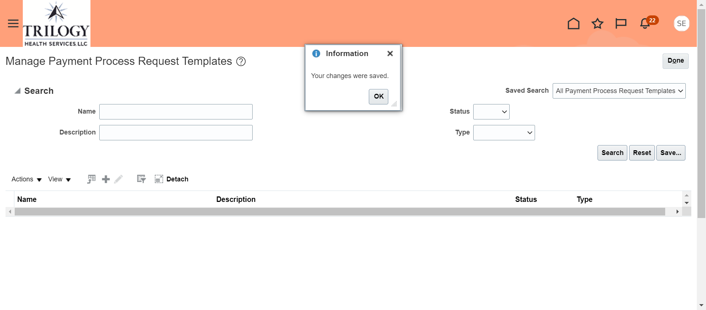

Create Payment process request template
TestDataSet:1
1.Click on :Home link
2.Click on :Payables link
3.Click on :Invoices link
4.Click on :Task panel
5.Click on :Manage Payment Process Request Templates link
6.Click on :Actions dropdown
7.Click on :Create link
8.Click on :Selection Criteria link
9.Type '90' in : Number textbox
10.Click on :Pay Groups
11.Click on :Currencies
12.Click on :Business Units
13.Click on :Legal Entities
14.Click on :Sources
15.Type 'NIGS_ Check_Template09_11_2022_02_12_54_PM' in : Name textbox
16.Type 'Testing' in : Dscription textbox
17.Click on :Payment and Processing Options link
18.Type 'TRIL INVESTOR' in : Disbursement Bank Account textbox
19.Click on :TRIL INVESTOR option link
20.Click on :Payment Date
21.Click on :Payment Document textbox
22.Type 'Check_Temp' in : Payment Document textbox
23.Type 'Standard Check' in : Payment Process Profile textbox
24.Click on :Review installments checkbox
25.Click on :Review proposed payments checkbox
26.Click on :Create payment files immediately checkbox
27.Click the 'Save and close button'

30.Click on :Confirmation popup Ok button
31.Verified popup message
back